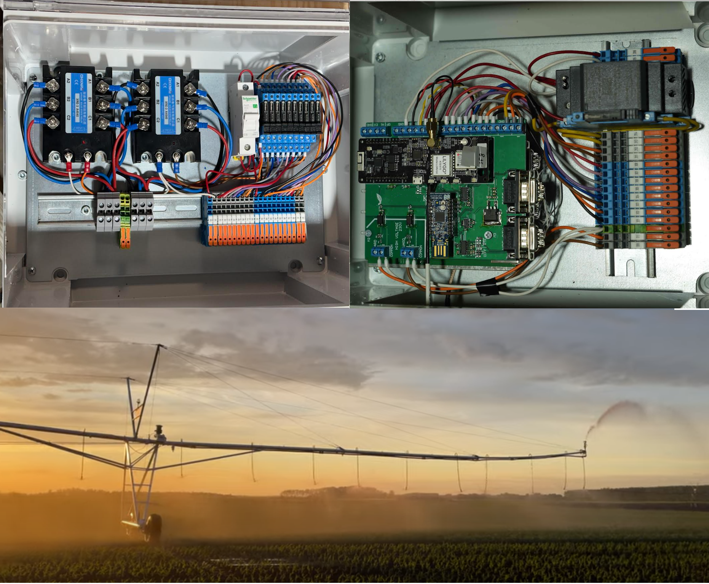

Control panel for medical devices such us autoclave or ventillator, or can be used for other industrial control.
Params: 2500 vias, 15000 wire parts. ETH, CAN, WIFI, BL, Ain/Din/Dout ports, RTC, 485/232, AUDIO, OTG/USB, Display RES/CAP (it dependes on the PP), 8layers,
CE ready at first try.

Linear irrigation machine's corner arm control device. Params: High Voltage, LORA, BL, RTK, Antenna making

Life signals monitoring. Params: Flex/rigid PCB. Measure the body's temp/breath/oxigen sat/ecg. Military usage: a group of soldiers are in connection via long-range BL, and the members of the mesh
can see each other life signals.
The goal was to create a device that would combine the measurment and processing of 24 different devices from a competing company into one device. Several Univercitis use these devices for their research papers.

Measuring the body temp, drinking habit, defining the raminating and breeding season. Probe lifetime 15 Years (It depends on the datasending period)

A scientist group use this device for measuring their patients walking habits and correct body posture. The device is scalable there isn't any maximum number.
May be use for another purposes to protect the workers in the factory. Params: 10Khz refresh rate.

The device contains two different type of modem, due to the usage. Just like the regular power meters, it also can communicate via P1 port, Rs485, SMS, UDP pkg., BL.

The device collects data with IR sensor from the Co2 Gas. The deep learn algorithm evaluates the patient's lung status, just like a pulmonologist would.